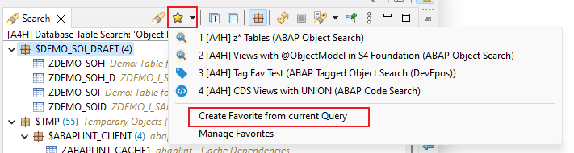

Release Notes of ABAP Search and Analysis Tools 2.0.0
Due to breaking changes in this release, the abapGit repository
abap-search-tools needs to be
updated to version
2.0.0 in the targeting ABAP system
ABAP Object Search
Features
- Redesign of search dialog
 New ABAP Object Search Dialog
New ABAP Object Search Dialog
- New search type View
- New search type Method
- New search type Message
- New unified Search Favorites (More Information)

New Search Favorites
- Text Filter possibility for Search Result View
 Text Filter for Search Result Viewer
Text Filter for Search Result Viewer
CDS Analysis
Features
- New Recursive Loading option for Where-Used in CDS Analysis
- New Viewer Filters for Where-Used in CDS Analysis